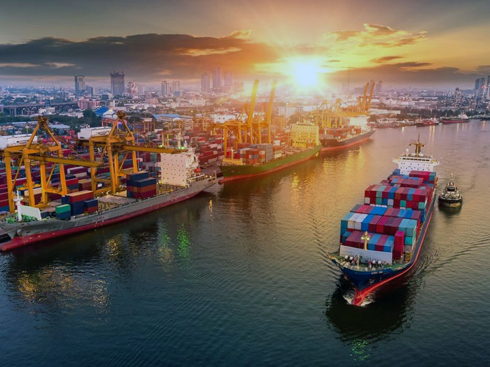
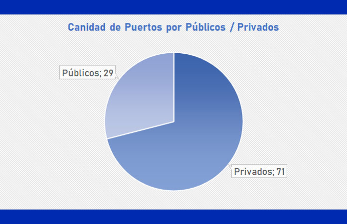
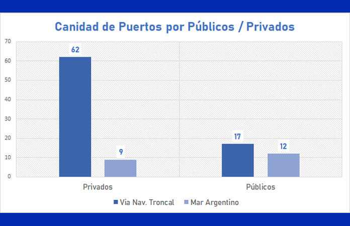

Relevamiento de puertos en Argentina
La cantidad total de puertos —fluviales y marítimos— en Argentina es de 100. La información fue recabada de la página oficial de la Agenda de Puertos oficiales de Argentina. Se observa una mayoría de puertos privados (71) frente a los públicos (29) y, considerando las toneladas operadas en 2021, la actividad en puertos privados (114.905.889 t) también duplica a la de los públicos (53.199.843 t).
Distribución geográfica
Argentina cuenta con 79 puertos en la hidrovía Paraná-Paraguay y 21 en el litoral del Mar Argentino. La mayoría de los puertos de la hidrovía son privados, mientras que los del Mar Argentino son, en su mayor parte, públicos: en la hidrovía hay 62 privados y 17 públicos; en el Mar Argentino, 9 privados y 12 públicos.

Tipos de buques que operan
En cuanto a los tipos de buque, se destacan por cantidad los Panamax (25), las barcazas (19) y los Bulk Carrier (8). Muchos puertos operan con más de un tipo de buque, por lo que los totales de tipos de barcos son mayores al número de puertos.

Sectores predominantes en los puertos privados
Tomando solo el relevamiento de los puertos privados, la mayor parte de ellos operan en el sector agroindustrial (25) y de energía / hidrocarburos (21). Le siguen los líquidos químicos (4), el acero (3) y la madera (3).
Volumen operado en 2021
En cuanto a las toneladas operadas en 2021, la mayor parte de los puertos (36) —tanto privados (24) como públicos (12)— movió menos de 500.000 t.
En TEU, aunque los datos oficiales son parciales, la mayoría de los puertos públicos (5) operó hasta 25.000 TEU, mientras que la mayoría de los privados (2) se ubicó entre 25.000 y 50.000 TEU.
Sobre los pasajeros transportados en 2021, tampoco hay gran cantidad de datos oficiales. Ushuaia es el puerto con mayor cantidad de personas transportadas. Los tres puertos relevados son públicos.
Cruceros turísticos: temporada 2022-2023
Según la información oficial sobre cruceros turísticos que operan en el Puerto de Buenos Aires, la temporada 2022-2023 —de octubre de 2022 a abril de 2023— tendrá un total de 122 cruceros y transportará 370.940 pasajeros. Las principales procedencias son Montevideo, Punta del Este y Puerto Madryn; y los principales destinos, Montevideo, Río de Janeiro y Puerto Madryn.